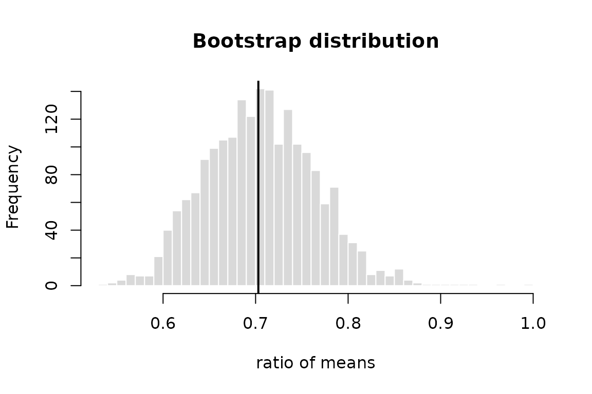

vignettes/resampling-inference.Rmd
resampling-inference.RmdThis vignette shows how to quantify uncertainty without relying on distributional assumptions (bootstrap intervals and permutation tests), and how to report the size of an effect together with an exact interval.
Consider the ratio of mean fuel consumption between automatic and
manual cars in mtcars. The ratio has no simple standard
error, but the nonparametric bootstrap gives one directly. For a
statistic of a data frame, boot_ci() resamples rows.
ratio <- function(d) mean(d$mpg[d$am == 0]) / mean(d$mpg[d$am == 1])
ci <- boot_ci(mtcars, ratio, R = 1999, seed = 2024)
ci
#> Nonparametric bootstrap confidence intervals
#> n = 32, R = 1999 replicates
#>
#> Estimate: 0.703 (bias 0.002727, SE 0.05936)
#>
#> type level lower upper
#> percentile 95% 0.5996 0.8215
#> basic 95% 0.5845 0.8063
#> normal 95% 0.5839 0.8166
#> bca 95% 0.5961 0.8165The four methods rest on different assumptions (Davison and Hinkley 1997):
c(bias_correction = ci$bias_correction, acceleration = ci$acceleration)
#> bias_correction acceleration
#> -0.038254532 -0.003122252
hist(ci$replicates, breaks = 40, main = "Bootstrap distribution",
xlab = "ratio of means", col = "grey85", border = "white")
abline(v = ci$estimate, lwd = 2)
boot_ci() reproduces boot::boot.ci() to
machine precision given the same seed (see the package tests). What it
adds is a small, validated interface and a guarantee that the caller’s
random number stream is not changed.
A permutation test gives an exact test of the null hypothesis that
the group labels are exchangeable. With 13 manual and 19 automatic cars
there are
rearrangements, far too many to enumerate, so perm_test()
draws a random sample of them:
manual <- mtcars$mpg[mtcars$am == 1]
auto <- mtcars$mpg[mtcars$am == 0]
pt <- perm_test(manual, auto, R = 9999, seed = 1)
pt
#>
#> Monte Carlo two-sample permutation test
#>
#> data: manual and auto
#> T = 7.2449, rearrangements = 9999, p-value = 3e-04
#> alternative hypothesis: true location shift is not equal to 0
pt$p.value.mcse
#> [1] 0.0001731878The p-value is computed as , never as . The estimator can return zero, and the test built on it is anti-conservative (Phipson and Smyth 2010). Any statistic can be used, such as a difference in medians:
perm_test(manual, auto, statistic = function(x, y) median(x) - median(y),
R = 9999, seed = 1)$p.value
#> [1] 0.0189When the reference set is small, the test is exact. In the paired
sleep data there are
sign flips:
perm_test(sleep$extra[1:10], sleep$extra[11:20], paired = TRUE)
#>
#> Exact paired sign-flip randomisation test
#>
#> data: sleep$extra[1:10] and sleep$extra[11:20]
#> T = -1.58, rearrangements = 1024, p-value = 0.003906
#> alternative hypothesis: true location is not equal to 0A p-value says nothing about the magnitude of an effect. Standardised
mean differences do, but their commonly reported large-sample intervals
can be badly wrong in small samples. cohens_d() and
hedges_g() invert the noncentral
distribution instead (Steiger and Fouladi 1997;
Cumming and Finch 2001):
hedges_g(manual, auto)
#> Hedges' g (independent samples)
#> estimate = 1.441, 95% CI [0.6536, 2.209]
#> df = 30, n = 13 + 19
cohens_d(sleep$extra[1:10], sleep$extra[11:20], paired = TRUE)
#> Cohen's d (paired (d_z))
#> estimate = -1.285, 95% CI [-2.118, -0.4146]
#> df = 9, n = 10Hedges’ applies the exact correction , which removes the upward bias of in small samples (Hedges 1981):
round(hedges_correction(c(5, 10, 20, 50, 100)), 4)
#> [1] 0.8407 0.9227 0.9619 0.9849 0.9925